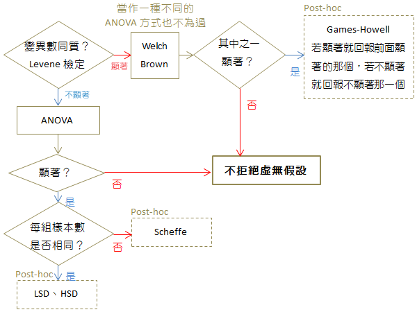

ANOVA 簡介
- ANalysis Of VAriance
- 中文稱「平均數的變異數分析」
- 假設三個組，分別為沒吃藥、有吃藥、有吃安慰劑，三組的平均血壓值不相同，這究竟只是抽樣的問題，或真有差異？
- F 檢定的應用
三大假設
- 常態性假設：每組反應變數的母體均為常態分配
$$ Y_{i} \sim N(\mu_{i},\sigma), i = 1,2,…k $$
同質性假設：每組的母體變異數都相等 (通常用Levene同質性檢定)
$$ \sigma_{i}^{2} = \sigma^2 $$獨立性假設：樣本在組間、組內均獨立。
公式
- 總變異
總變異 = 組間變異 + 隨機變異
$$ SST = SSF + SSE $$
$$ SST: sum\ of\ squares\ due\ to\ total $$
$$ SSF: sum\ of\ squares\ due\ to\ factor $$
$$ SSE: sum\ of\ squares\ due\ to\ error $$ 因子變異(組間變異)
- 符號
- $k$ 指的是組數
- $n$ 指的是組內的樣本數
$$ SSF = \sum_{i=1}^{k}\sum_{j=1}^{n_i}(\overline{Y_{i}} - \overline{\overline{Y}})^2 $$
或
$$ SSF = \sum_{i=1}^{k}n_{i}(\overline{Y_{i}} - \overline{\overline{Y}})^2 $$
- 隨機變異(組內變異)
$$ SSE = \sum_{i=1}^{k}\sum_{j=1}^{n_i}(Y_{ij} - \overline{Y_{i}})^2 $$
或
$$ SSE = \sum_{i=1}^{k}(n-1)S_{i}^2 $$
舉例
- SSF：有服藥，沒服藥以及服用安慰劑三組，各組分別計算樣本數乘以組內平均與總體平均之平方差，然後加總即為SSF。
SSE：無法被服藥解釋的部分，均為隨機變異。
平均因子變異
$$ MSF = \frac{SSF}{k-1}$$
平均隨機變
$$ MSE = \frac{SSE}{\sum{n_{i}} - k}$$F 檢定統計量
$$ F = \frac{MSF}{MSE} \sim F_{k-1,\sum{n_{i}}-k} $$
決策法則
若 $ F > \frac{MSF}{MSE} \sim F_{k-1,\sum{n_{i}}-k,\alpha} $，則拒絕 $H_{0}$
若 $ F \le \frac{MSF}{MSE} \sim F_{k-1,\sum{n_{i}}-k,\alpha} $，則接受 $H_{0}$
範例
1 | Wid<- aov(Petal.Width~Species, data=iris) |
整體流程
- 參考自[教學] [統計] ANOVA變異數分析 小筆記

參考資料
交通大學工業工程與管理學系王志軒教授講義
[教學] [統計] ANOVA變異數分析 小筆記
R統計分析與資料探勘入門—以鳶尾花資料集為例
Performing Bartlett’s test in R
R筆記–(5)初聲試啼-簡單的資料分析(迴歸分析)
ANOVA assumption normality/normal distribution of residuals